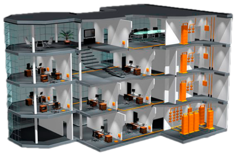

Servicios de Red
- Diseño, implementación y soporte de sitios
- Sitios WiFi. Radioenlaces
- Implementación de equipamiento de networking
- (Routing - Switching - Wireless - Firewall - Proxy)
- Consultoría, análisis y solución de problemas en ambientes LAN y WAN
- Monitoreo de equipamiento
- Optimización de recursos
- Performance & tuning
- Seguridad Informática
Control y monitoreo
- Control y monitoreo, de resolución de problemas y de suministro de recursos
- Detección de puntos de falla
- Hacer uso eficiente de la red y utilizar mejor los recursos, en especial el ancho de banda
- Reducir costos por reemplazo de proveedores o tecnologías
- Trabajar con la red con el objetivo de hacerla mas segura, protegiéndola contra el acceso no autorizado externo o interno. Implementar mecanismos de alarma temprana
- Controlar cambios y actualizaciones en la red de modo que ocasionen las menos interrupciones posibles, en el servicio a los usuarios internos o externos
- Aplicación de políticas de traffic shaping y queueing.. Mezcla controlada y categorización de diversas tipos de tráfico (voz, datos, video, etc.)
- Realizar la interconexión de varios tipos de redes, como WAN, LAN y MAN
Cableado estructurado

- Diseño e ingeniería de obras y proyectos
- Tendido de cableado estructurado
- Fibra óptica
- CCTV (Circuito cerrado de televisión)
- Control de accesos físicos